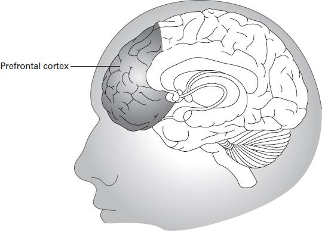

Bộ não và nhận thức bản thân
Bộ não tạo nên cảm giác về chính mình như thế nào?
Bộ não là một trong những cơ quan phức tạp nhất của cơ thể con người. Nó không chỉ điều khiển các hoạt động thể chất mà còn đóng vai trò quan trọng trong suy nghĩ, cảm xúc, trí nhớ và nhận thức.
Nhận thức bản thân (Self-awareness) là khả năng nhận biết những gì đang diễn ra bên trong chính mình, bao gồm suy nghĩ, cảm xúc, hành động và trạng thái cá nhân.
Ví dụ, khi bạn nhận ra mình đang lo lắng trước một bài thuyết trình, bạn không chỉ trải nghiệm cảm xúc mà còn nhận biết được cảm xúc đó.
Vì sao chúng ta đôi khi hiểu sai chính mình?
Con người không phải lúc nào cũng suy nghĩ một cách khách quan. Bộ não thường sử dụng những niềm tin và trải nghiệm trước đây để diễn giải thông tin mới.
Một hiện tượng tâm lý phổ biến là thiên kiến xác nhận (Confirmation Bias). Đây là xu hướng chú ý đến những thông tin phù hợp với niềm tin sẵn có của chúng ta.
Chẳng hạn, nếu bạn tin rằng mình không giỏi một môn học, bạn có thể dễ dàng nhớ những lần làm sai mà quên đi những lần đạt kết quả tốt.
Điều này cho thấy cách chúng ta nhìn nhận bản thân đôi khi không hoàn toàn phản ánh thực tế.
Khoa học nói gì?
Các nghiên cứu về khoa học thần kinh cho thấy nhận thức bản thân liên quan đến nhiều vùng não và hệ thống nhận thức khác nhau. Nó không đơn giản là một chức năng nằm tại một vị trí duy nhất trong não.
Hiểu được cách bộ não hoạt động có thể giúp chúng ta nhìn nhận suy nghĩ và cảm xúc một cách khách quan hơn.
Câu hỏi khám phá: Liệu những gì bạn tin về bản thân có phải lúc nào cũng đúng?
